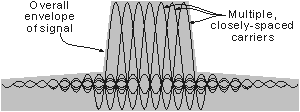

EEE317 Principles of Communications
| DVB-H | ||||||||||||||||||||
| - an overview of the DVB-H system for mobile video broadcasts. | ||||||||||||||||||||
Digital Video Broadcast - Handheld (DVB-H) is one of the major systems to be used for mobile video and television for cellular phones. DVB-H has been developed from the DVB-T (Terrestrial) television standard that is used in many countries around the globe including the UK, much of Europe, and the USA. The DVB-T standard has been shown to be very robust and in view of its widespread acceptance it forms a good platform for further development for handheld applications.
|
||||||||||||||||||||
| Development requirements | ||||||||||||||||||||
The environment for handheld devices is considerably different to that experienced by most televisions. Domestic televisions usually have good directional antenna systems and reception conditions are fairly constant. Additionally most televisions receiving DVB-T will be powered by mains supplies, so power consumption is not a major issue. The conditions for handheld receivers are very different. The antennas will be particularly poor because of their need to be small and integrated into the handset in such a way that they either appear fashionable, or they are not visible. The obvious mobility of handsets will require signals to be received in a variety of locations, many of which will not be ideally suitable for video reception. Not only will be signal be subject to considerable signal variations and multi-path effects, but it may also experience high levels of interference. Also some difficulties are presented by the fact that the handset could be in a vehicle and actually on the move.
While DVB-T proved to be remarkably robust under many circumstances, one of the major problems was that of power consumption. Battery life for handsets is a major concern, and users expect the life between charges will be several days.
|
||||||||||||||||||||
| Operation of DVB-H | ||||||||||||||||||||
The DVB-H standard has been adopted by ETSI, European Telecom Standards Institute, and in this way the system can be truly international, preventing compatibility problems caused by different countries and operators using different variants of the same system. The documents for the physical layer were ratified in 2004, with the upper layers defined in 2005. DVB-H (Digital Video Broadcast Handheld) is based on the very successful DVB-T (Digital Video Broadcast Terrestrial) standard that is now used in many countries for domestic digital television broadcasts. DVB-H has taken the basic standard and adapted it so that it is suitable for use in a mobile environment, particularly with the electronics incorporated into a mobile phone.
|
||||||||||||||||||||
| OFDM | ||||||||||||||||||||
The DVB-H standard like DVB-T uses a form of modulation called Orthogonal Frequency Division Multiplex (OFDM). This has been adopted because of its high data capacity and suitability for applications such as broadcasting. It also offers a high resilience to interference, can tolerate multi-path effects and is able to offer the possibility of a single frequency network, SFN. Orthogonal Frequency Division Multiplex (OFDM) is a form of modulation which uses a large number of closely spaced carriers that are modulated with low rate data. These signals would normally be expected to interfere with each other, but by making the signals orthogonal by choosing the carrier spacing carefully, interference can be avoided. For this to occur, the carrier spacing must be equal to the reciprocal of the symbol period. When a particular signal is demodulated, the adjacent carriers will contain a whole number of cycles in each symbol period and their contribution will sum to zero.
 OFDM Spectrum The data to be transmitted is split across all the carriers and this means that by using error correction techniques, if some of the carriers are lost due to multi-path effects, then the data can be reconstructed. Additionally having data carried at a low rate across all the carriers means that the effects of reflections and inter-symbol interference can be overcome. It also means that single frequency networks, where all transmitters can transmit on the same channel can be implemented. For more information on OFDM refer to Radio-Electronics.Com
|
||||||||||||||||||||
| DVB-H modes | ||||||||||||||||||||
There are a variety of modes in which the DVB-H signal can be configured. These conform to the same standards used by DVB-T. These are 2K, 4K, and 8K modes, each having a different number of carriers as defined in the table below. The 4K mode is a further introduction beyond that which is available for DVB-T.
Signal parameters for DVB-H OFDM Signal (8MHz Channel) The different modes balance the different requirements for network design, trading mobility for single frequency network size, with the 4K mode being expected to be most widely used. The standard will support a variety of different types of modulation within the OFDM signal. QPSK (Quadrature Phase Shift Keying), 16QAM (16 point Quadrature Amplitude Modulation), and 64QAM (64 point Quadrature Amplitude Modulation) will all be supported, with chipsets being able to detect the modulation and receive the incoming signal. The choice of modulation is again a balance, QPSK offers the best reception under low signal and high noise conditions but the lowest data rate. 64QAM offers the highest data rate, but requires the highest signal level to provide sufficiently error free reception.
|
||||||||||||||||||||
| Time slicing | ||||||||||||||||||||
One of the key requirements for any mobile TV system is that it should not give rise to undue battery drain. Mobile handset users are used to battery life times extending over several days, and although battery technology is improving, basic mobile TV technology should ensure that battery drain is minimised. There is a module within the standard and hence the software that enables the receiver to decode only the required service and shut off during the other service bits. It operates in such a way that it enables the receiver power consumption to be reduced while also offering an uninterrupted service for the required functions. The time slicing elements of DVB-H enable the power consumption of the mobile TV receiver to be reduced by 90% when compared to a system not using this technique. Although the receiver will add some additional power drain on the battery, this will not be nearly as much as it would have been had the TV reception scheme not employed the time slicing techniques.
|
||||||||||||||||||||
| Interleaving | ||||||||||||||||||||
Interleaving is a technique where sequential data words or packets are spread across several transmitted data bursts. In this way, if one transmitted burst or group is lost as a result of noise or some other drop-out, then only a small proportion of the data in each original word or packet is lost and it can be reconstructed using the error detection and correction techniques employed. Further levels of interleaving have been introduced into DVB-H beyond those used for DVB-T. The basic mode of interleaving used on DVB-T and which is also available for DVB-H is a native interleaver that interleaves bits over one OFDM symbol. However DVB-H provides a more in-depth interleaver that interleaves bits over two OFDM symbols (for the 4K mode) and four bits (for the 2K mode). Using the in-depth interleaver enables the noise resilience performance of the 2K and 4K modes to be brought up to the performance of the 8K mode and also improves the robustness of reception in a mobile environment.
|
||||||||||||||||||||
| MPE-FEC | ||||||||||||||||||||
In view of the particularly difficult reception conditions that may occur in the mobile environment, further error correction schemes are included. A scheme known as MPE-FEC provides additional error correction to that applied in the physical layer by the interleaving. This is a forward error correction scheme that is applied to the transmitted data and after reception and demodulation, allows the errors to be detected and corrected.
|
||||||||||||||||||||
| Compatibility with DVB-T | ||||||||||||||||||||
DVB-H is a development of DVB-T and as a result shares many common components. It has been designed so that it can be used in 6, 7, and 8 MHz channel schemes although the 8MHz scheme will be the most widely used. There is also a 5MHz option that may be used for non-broadcast applications. In view of the similarities between DVB-H and DVB-T it is possible for both forms of transmission to exist together on the same multiplex. In this way a broadcaster may choose to run two DVB-T services and one DVB-H service on the same multiplex. This feature may be particularly attractive in the early days of DVB-H when separate spectrum is not available. |